| Author |
Topic: Update on Timing
Gear! |
Back On Holiday
Member
Posts: 331
From:Oxford, PA
Registered: Jul 2001
|
 posted
02-24-2002 05:15 PM
posted
02-24-2002 05:15 PM
Heres the latest pics taken a couple mins ago
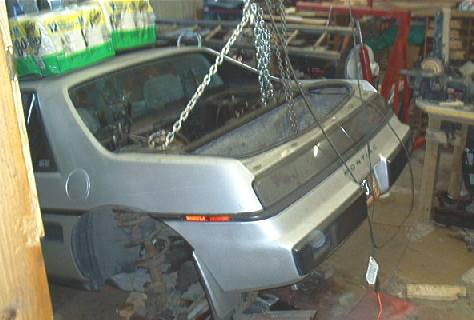
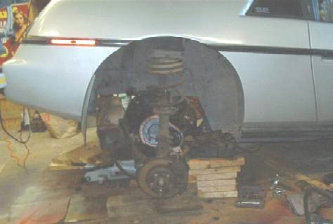
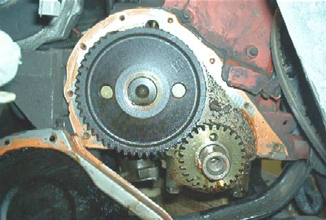
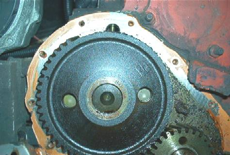
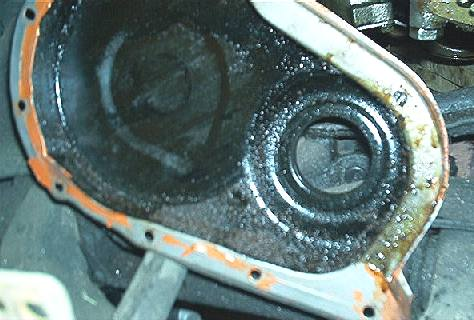

------------------
84se Silver 2m4 - Daily Driver
86se
Silver 2m6 - Current Project Restoration Almost done!
87GT
Burgandy - Future Project!
IP: Logged |
FieroJoe
Member
Posts: 1889
From:Mason, MI
Registered: Nov 2000
|
posted
02-24-2002 05:26 PM
OMG!!
That just WRONG!
------------------
'87 Coupe 5spd. - Soon to
be V6, engine build in progress!
AIM:FieroJoe87
IP: Logged |
avengador1
Member
Posts: 1622
From:Ansonia, CT, USA
Registered: Oct
2001 |
 posted
02-24-2002 05:53 PM
posted
02-24-2002 05:53 PM
So what's the problem? You still have some teeth left on the
gear.LOL  Was that thing running
like that? WOW. Was that thing running
like that? WOW.
------------------
IP: Logged |
theogre
Member
Posts: 6155
From:DE, USA
Registered: Mar 99 |
posted
02-24-2002 06:16 PM
Yuck....
------------------
11-Sept-01, The day the world as we knew it
ended.
IP: Logged |
Kasdan
Member
Posts: 1259
From:Athens, GA
Registered: Aug 2001
|
posted
02-24-2002 07:04 PM
*blink* 
------------------
UNDER CONSTRUCTION
Rebuilt 2.8, Zr-1 Cowl
Induction Hood, 1/4 Window
scoops,
removed spoiler, awaiting blue paint...
IP: Logged |
jelly2m8
Member
Posts: 662
From:Riverport, Nova Scotia, Canada
Registered:
Jul 2001 |
posted
02-24-2002 07:45 PM
Is that like a head light motor gear, where you can turn it 180*,
and get some more life out of it?...:P.
sorry, couldnt resist!
------------------
IP: Logged |
beachbomb
Member
Posts: 419
From:jacksonville, florida usa
Registered: May
2000 |
posted
02-24-2002 08:12 PM
Hey, i just did one of those 6 months ago, hellava job isn't it?!
Good luck..Jim('84 Indy)
IP: Logged |
MrPBody
Member
Posts: 840
From:Decatur, GA, USA
Registered: Oct
2000 |
posted
02-24-2002 08:33 PM
I hate it when that happens!
Old Volvos do that too; however, their gears are much easier to
change.
IP: Logged |
Back On Holiday
Member
Posts: 331
From:Oxford, PA
Registered: Jul 2001
|
posted
02-24-2002 11:12 PM
I couldn't believe half the teeth were missing, I believe that once
1 tooth goes, it screws everything up and it just starts like
dominos, I was in 3rd gear doing about 45mph when it died on me,
high torque and it ripped until the 7th planet from the sun was
distroyed.
IP: Logged |
Back On Holiday
Member
Posts: 331
From:Oxford, PA
Registered: Jul 2001
|
posted
02-26-2002 09:24 AM
bumpy
IP: Logged |
mshill
Member
Posts: 744
From:Rocklin, CA, USA
Registered: Aug 99
|
posted
02-26-2002 11:53 AM
My son and I are doing the same to his 88 Coupe. No teeth were
broken, but a whole lotta lash between the two gears. I used the
"tilt the engine down" method, but it would have been easier to drop
the entire cradle. Unfortunately I only have one engine dolley and
my 3.4L is sitting on it right now.
IP: Logged |
Master_Sushi
Member
Posts: 1311
From:Niagara Falls, NY
Registered: Apr
2000 |
 posted
02-26-2002 12:01 PM
posted
02-26-2002 12:01 PM
quote:
Originally posted by avengador1:
So what's the problem? You
still have some teeth left on the gear.LOL Was that thing running like that?
WOW.
That reminds me of something funny. I had an 88 pontiac lemans
that had the timing belt go out (got striped). I noticed the teeth
on the belt were a little better on the other side. I just fliped
the belt and drove the car for another few thousand miles .
Great beater car.
Oh, good luck with your work Back On Holiday. Looks like you
know what your doing.
IP: Logged |
Back On Holiday
Member
Posts: 331
From:Oxford, PA
Registered: Jul 2001
|
posted
02-26-2002 09:26 PM
Update, removal of Gears!
I want to thank Ogre, his explaination
has
made this possible.
The Gear with 2 1/4 tapped holes in
the metal
part surrounding the Cam.

heres the Gear Puller attached, timing gear is coming
out.
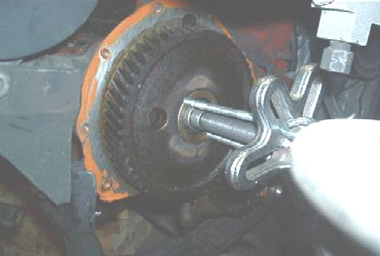
Heres ME with my dirty, but warm garage cloths on.
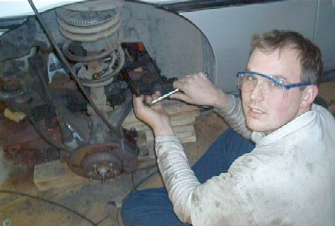
heres the gear removed
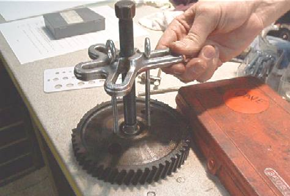
Heres the gear, with a good view of the holes
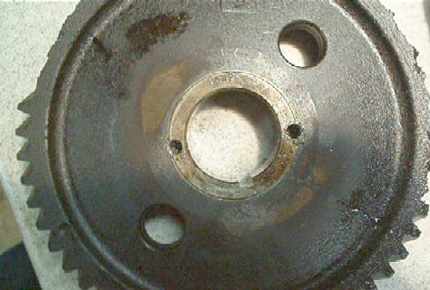
Heres my dad pulling off the Crank gear
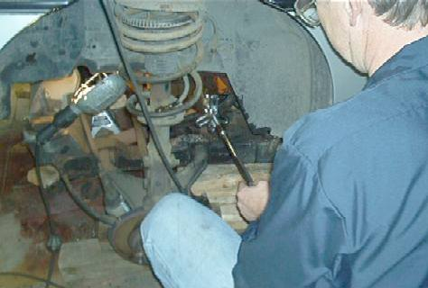
Heres the gear almost off
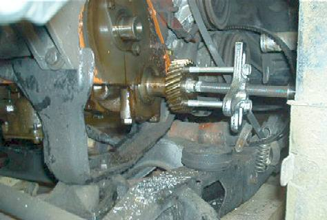
------------------
84se Silver 2m4 - Daily Driver
86se
Silver 2m6 - Current Project Restoration Almost done!
87GT
Burgandy - Future Project!
IP: Logged |
Back On Holiday
Member
Posts: 331
From:Oxford, PA
Registered: Jul 2001
|
posted
02-28-2002 10:32 PM
bumpy bump
IP: Logged |
theogre
Member
Posts: 6155
From:DE, USA
Registered: Mar 99 |
posted
02-28-2002 11:04 PM
With all the digging I did for that article, I'm glad it helped
someone.
If it's still apart, could you get one more picture? I'd like one
with the gears off to point out where the oil galery plug is. It
looks like a small freeze plug. I think that's it near the top of
the cam gear but can't say for sure.
According to the GM TSB on the gears, the plug is suposed to get
a small hole punched in it to improve oil flow to the gears. (size
is in the article) That extra bit of oil should improve the life of
any type gears used.
(Worst thing that can happen is someone punches a freeze plug
instead of the oil plug and has to replace it.... Not dificult but
annoying.)
When I get a chance, I'll add a link to this thread to the
cave... This should come in really handy for people.
IP: Logged |
GTDude
Member
Posts: 1252
From:Keysville, Virginia, USA
Registered: Nov
2001 |
posted
03-01-2002 09:05 AM
Theogre has the correct way to remove the gear....however I use a
shortcut cause I work on commission. I break off the fiber part of
the cam gear, being careful not to break the cast iron cam retainer
behind the gear.....easy to break. Then I use an air chisel to
chisel off the metal sleeve that is left. Not for the faint of
heart!!!!! Prob done 50 or more this way, but theogre definitely has
the recommended way.
Phil
------------------
GTDude
25 years GM experience
IP: Logged |
theogre
Member
Posts: 6155
From:DE, USA
Registered: Mar 99 |
posted
03-01-2002 07:25 PM
Phil, in the photos above... is that plug that is partly hiding
behind the top of the cam gear the oil galery plug GM is talking
about in the TSB? Looks like it would about have to be it.
IP: Logged |
Back On Holiday
Member
Posts: 331
From:Oxford, PA
Registered: Jul 2001
|
posted
03-01-2002 11:23 PM
The Ogre, I purchased a new cam retainer part, and it seems to have
several 1mm -2mm holes in it where the original doesn't. i'll take
several pics tommorrow for you of that and where the frost plug is,
or the area surrounding the area of the cam/crank.
sorry, very tired!
IP: Logged |
FieroPerformance
Member
Posts: 414
From:Cincinnati, OH, USA
Registered: Feb
2001 |
posted
03-01-2002 11:53 PM
Houston we have a problem. 
IP: Logged |
theogre
Member
Posts: 6155
From:DE, USA
Registered: Mar 99 |
posted
03-02-2002 12:13 AM
A problem with what?
IP: Logged |
Back On Holiday
Member
Posts: 331
From:Oxford, PA
Registered: Jul 2001
|
posted
03-02-2002 10:43 AM
quote:
Originally posted by FieroPerformance:
Houston we have a
problem.
Problem??? 
Ogre, I see now about the frost plug, including a close up. Also,
check out the cam retainer pics, the old on on the cam still, the
new one on the table has holes. Maybe better oiling?
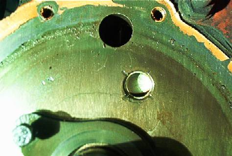
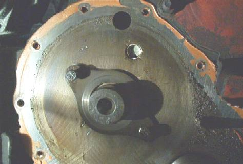
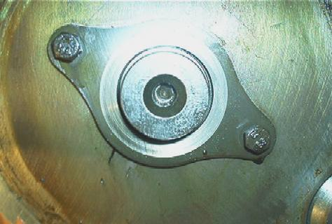
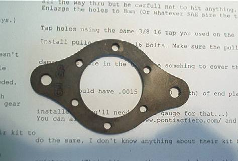
IP: Logged |
Art Doyle
Member
Posts: 37
From:Bedford,TX,USA
Registered: Nov 2001
|
 posted
03-02-2002 11:05 AM
posted
03-02-2002 11:05 AM
Hmmmm. This one is too close to home.
Is there any way fiber cam gear replacement can be avoided? Is
this a heat/age related issue...or is it related to the cam seizing?
It would be a shame if these wonderfully simple engines have the
typical import flaw - degradable timing components.
IP: Logged |
Back On Holiday
Member
Posts: 331
From:Oxford, PA
Registered: Jul 2001
|
posted
03-02-2002 11:49 AM
quote:
Originally posted by Art Doyle:
Hmmmm. This one is too close
to home.
Is there any way fiber cam gear replacement can be avoided? Is
this a heat/age related issue...or is it related to the cam
seizing?
.
I hope that the Aluminum/steel set I purchased will solve this
problems, at least for 100k miles.
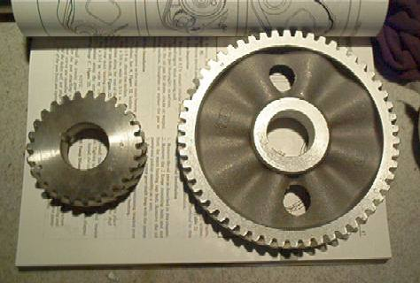
------------------
84se Silver 2m4 - Daily Driver
86se
Silver 2m6 - Current Project Restoration Almost done!
87GT
Burgandy - Future Project!
IP: Logged |
theogre
Member
Posts: 6155
From:DE, USA
Registered: Mar 99 |
posted
03-02-2002 08:53 PM
The holes in the retainer are likely to help with the oiling of the
retainer area.
I'd say the closup of the plug says that's the oil galery plug.
(the lower one that hiding behind the gear... ) Notice how the block
has been staked in 4 spots around it... you'd never do that to a
frost plug.(I'm not sure if the upper one is another oil passage
plug or what... It's not staked as far as I can see. It's in a weird
spot...)
Do you still need the hole in the plug with the use of the new
style of thrust plate? hard to say. There will be more oil going to
the hub area with the new plate, but does it still need the hole? I
honestly couldn't tell you.
One last thing... can you post the source and part numbers for
those gears and the new retainer?
Art,
overloading the cam gear with a bad oil pump or distributor won't
help anything... 87-88 motors gain in that they don't have
distributors but there's no guarantee the things still won't quit at
some point.
It's a combination of heat, age, cam load, and other things. How
often the oil is changed is likely also a factor.
IP: Logged |
Fiero_Freak
Member
Posts: 257
From:St. Louis, MO USA
Registered: Oct
2000 |
posted
03-03-2002 10:25 PM
Back to the top... I'd like the get those numbers and a source on
the gears and retainer. I think I may be in the same boat. Thanks
again on the advice theogre. I'll be into that car in a few
weeks...as soon as the garage gets wired and dry-walled.
IP: Logged |
Back On Holiday
Member
Posts: 331
From:Oxford, PA
Registered: Jul 2001
|
posted
03-09-2002 07:55 PM
From GM PARTS Counter..
Part Numbers are, new plate for cam and
washer: 12508079
Seal for Crank/timing cover: 10243247
Timing gear set (aluminum cam gear and steel crank gear) bought
off Carparts.com a division of JCWhitney,
Set, 2.5-R (151) ENG;
1982-86 Alum. Includes 2524 & 2537
� Usually ships in 7 - 10
business days.
MELLING
Part Number: 2538S
Price as of
3/9/02: $35.98
Took about 3 weeks to get from the factory.
Also, tapping the cam with the 3/8 16 bottoming tap is too small,
had to drill and use a 7/16 20 (I believe) but got the gear halfway
on and stripped the threads. had to run out and get a 1/2 20 tap and
hardware, I recommend using this first as it has more hold, don't
even bother with the 7/16 tap, go upto the 1/2 20 it will work
better. My dad ground down the tip of the tap to get an extra 1
thread in the cam also.
heres some pics....
next post!
IP: Logged |
Back On Holiday
Member
Posts: 331
From:Oxford, PA
Registered: Jul 2001
|
posted
03-09-2002 07:57 PM
Pics...
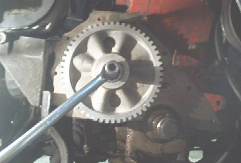
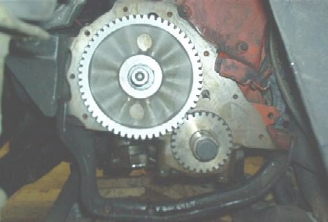
you can see the custom
made piece on the center of the Cam gear still, it was dinner time
and I only had a minute to flash these cause I was hungry!
IP: Logged |
theogre
Member
Posts: 6155
From:DE, USA
Registered: Mar 99 |
posted
03-10-2002 12:24 AM
BOH, If I didn't already, thanks for posting all this. It
confirms/modifies what I have posted and helps allot of people. If I
didn't add it already, this thread will be added to the cam stuff in
my cave. (hard to keep track of all my changes any more.)
IP: Logged |
Back On Holiday
Member
Posts: 331
From:Oxford, PA
Registered: Jul 2001
|
posted
03-10-2002 08:48 AM
Thank you, using your info as a guide helped out
alot.
Only problem that I had was pushing the gear on, using a piece of
threaded rod earlier, when I went back to the hardware store I got a
hardened bolt with a allen type connector on the end, make sure its
short enough to fit a socket over, since I was using a nut that was
3/4 in size, it almost is an exact fit for a 19mm socket, the socket
fit right over the allen head...see pic.
when I tryed using a
regular socket wrench also, it would push the gear on crooked, I
ended up trying the impact wrench on it, on the low 1 of 3 setting,
turned down the compressors output so that it was just giving the
wrench a "little" juice, so that it didn't rip the threads. using
this way was easyier, but I was really worried I would rip some more
threads like I did with the 7/16 ones. part of that resulted in
having to switch upto power 2 and tapping the gun, I shouldv'e
recharged the tank and used setting 1 more, but if I had to do it
next time, go right to the 1/2 20 size.
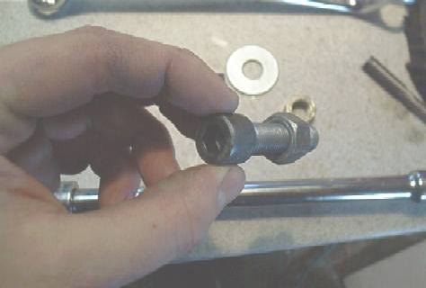
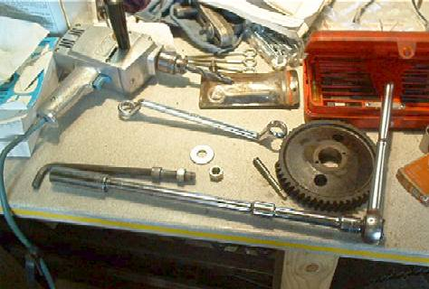

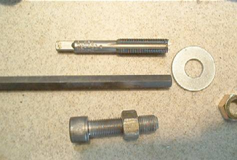
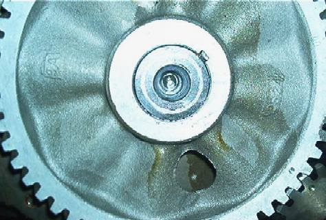
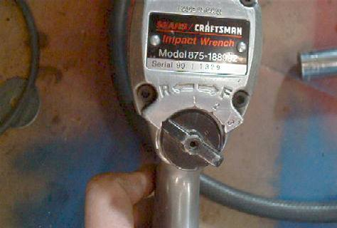
IP: Logged |
theogre
Member
Posts: 6155
From:DE, USA
Registered: Mar 99 |
 posted
03-10-2002 02:33 PM
posted
03-10-2002 02:33 PM
Some of the dificulty with pressing the gear may be the gear itself.
The center hole may be very slightly tighter than the OE gear.
At least now it's on and we've all got a much better idea of how
the procedures work and what to watch out for. Hopefully it will be
usefull to others.
IP: Logged |
Bob Englert
Member
Posts: 427
From:Greensboro, NC, USA
Registered: Mar
2000 |
posted
03-10-2002 07:55 PM
I thought I remember hearing that you should put the new metal gear
in the oven for a while and heat it up some before installing. I
think this should expand the gear a little and make it easier to
install on the cam.
Does this make any sense?
------------------
Bob
2 - 87 GT's
85 SE 4 cyl
IP: Logged |
theogre
Member
Posts: 6171
From:DE, USA
Registered: Mar 99 |
posted 03-11-2002 07:40 PM
Yes, warming the gear to make it expand makes sense... I'm not sure
how hot you'd have to get it to do any good, or the safest way to do
it... You can't get it too hot or you actually damage the gear.
The oven would be the only way to heat it evenly.
You'd want good oven mits for sure.
Keeping it hot long enough to get it to the motor should be fun.
You've got to keep the heat in it, without burning/melting whatever
you cary it with. Most people don't have a stove in their work
areas... So it has to be insulated or it will cool pretty
fast.
IP: Logged |
85Josh
Member
Posts: 399
From:Louisville, Ky USA
Registered: Feb
2001 |
posted 03-11-2002 08:36 PM
When I put mine in, I boiled it in clean 30-weight oil. Use a double
boiler, and heat it till the oil just starts to smoke. It stinks,
but the oil retains its heat long enough to get the gear on. By the
way, I appreciate all the pics, looks like the removal went better
for you than mine did.
------------------
85 2M4(Lil' Bit)
IP: Logged |
blakeinspace
Member
Posts: 289
From:Fort Worth, Texas
Registered: Dec
2001 |
 posted 03-11-2002 11:03 PM posted 03-11-2002 11:03 PM
quote:
Originally posted by theogre:
Yes, warming the gear to make
it expand makes sense... I'm not sure how hot you'd have to get it
to do any good, or the safest way to do it... You can't get it too
hot or you actually damage the gear.
The oven would be the only way to heat it evenly.
You'd want good oven mits for sure.
Ever hear of a microwave?
IP: Logged |
Back On Holiday
Member
Posts: 344
From:Oxford, PA
Registered: Jul 2001
|
posted 03-11-2002 11:53 PM
don't think you want to be putting a METAL gear into the microwave
oven.
as for heating it, we used a propane torch and just kept circling
the center, plus aluminum conducts heat really good so it was evenly
dispersed.
The oven idea would be perfect, except my wife would
never let me do that with her 1 year old oven, the stench of oil
would never come out.
IP: Logged |
| Back On Holiday
|
posted 03-11-2002 11:56 PM
Message Deleted By Ogre.
IP: Logged |
blakeinspace
Member
Posts: 289
From:Fort Worth, Texas
Registered: Dec
2001 |
posted 03-12-2002 12:56 AM
great thread... I hope you know I was joking about the microwave
 honest... I was
joking! honest... I was
joking!
But make sure you defrost your timing set before baking it at 350
for 15 minutes.
Coming next... more fine PFF recipes including:
Spark Plug
Turnovers, Coolant Cake, and Poly Pork Chops.
IP: Logged |
Doug Elam
Member
Posts: 30
From:Michigan
Registered: Feb 2002 |
posted 03-12-2002 10:50 AM
Loads of fun, I use a power steering pulley installer, drill a 3/8
hole and in it goes, without heating. Boiling in oil is only for
fiber gears (saturates the gear with oil for long life)
IP: Logged |
| theogre |
posted 03-12-2002 08:08 PM
Message Deleted By Ogre.
IP: Logged |
| Back On Holiday
|
posted 03-12-2002 09:05 PM
Message Deleted By Ogre.
IP: Logged |
Back On Holiday
Member
Posts: 344
From:Oxford, PA
Registered: Jul 2001
|
posted 03-13-2002 10:18 PM
heres some more pics of me making her whole
again...
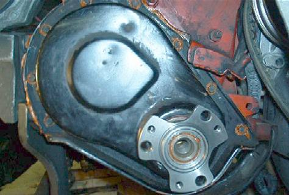
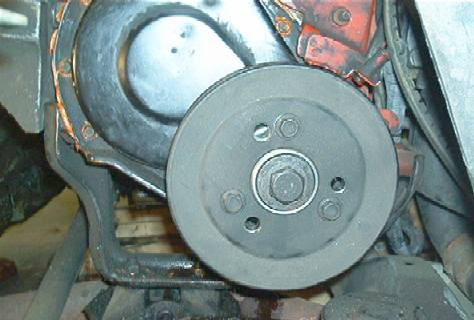
IP: Logged |
 Go Home
Site Map
Go Home
Site Map